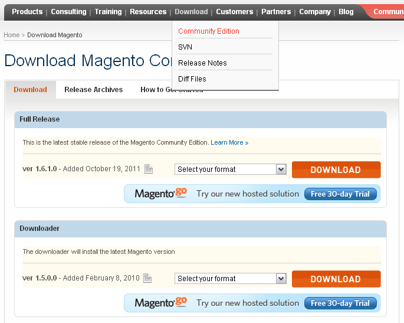
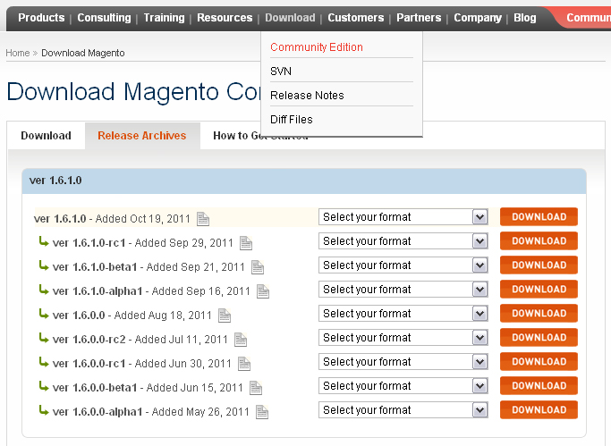
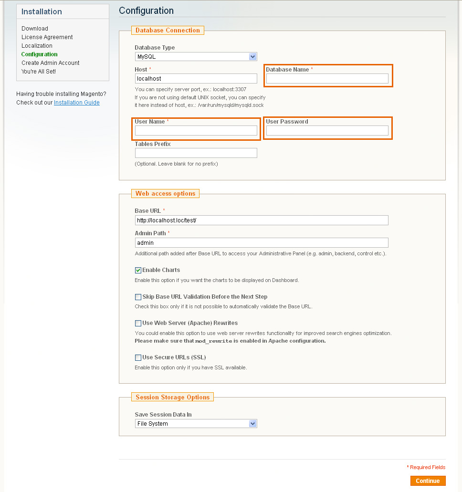
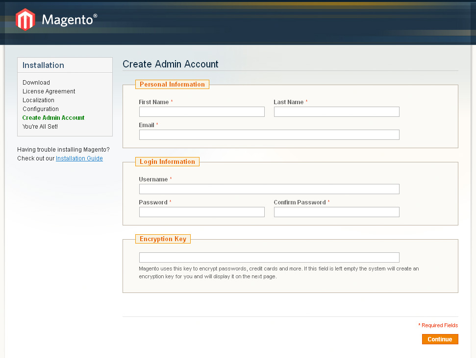
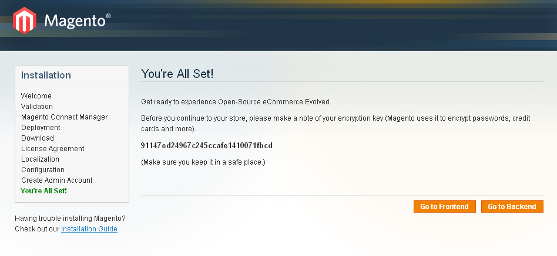
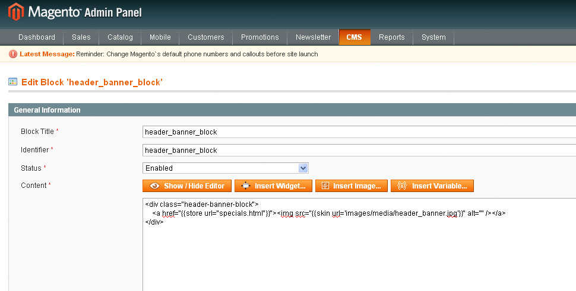
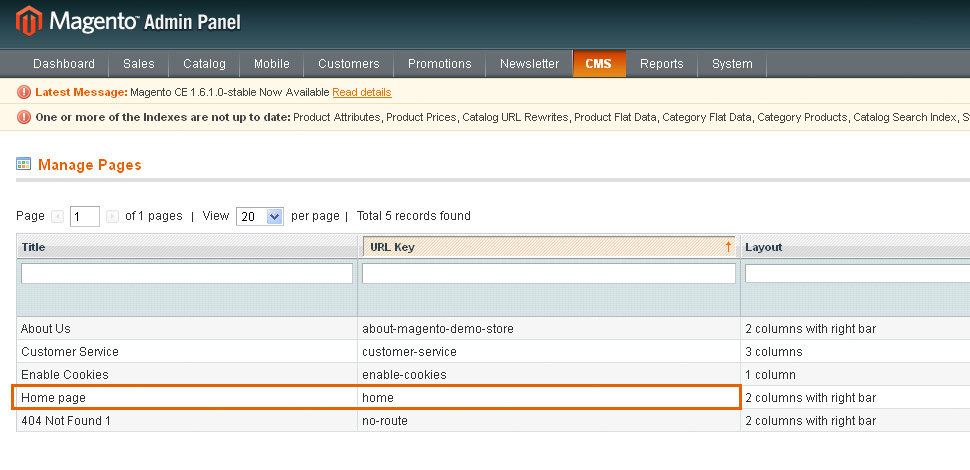
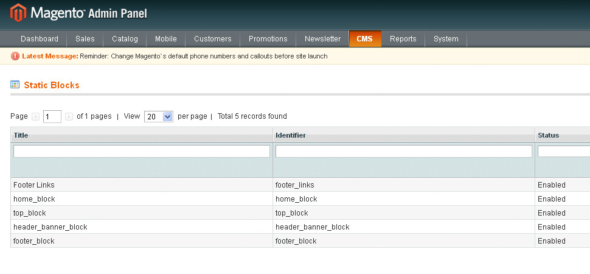
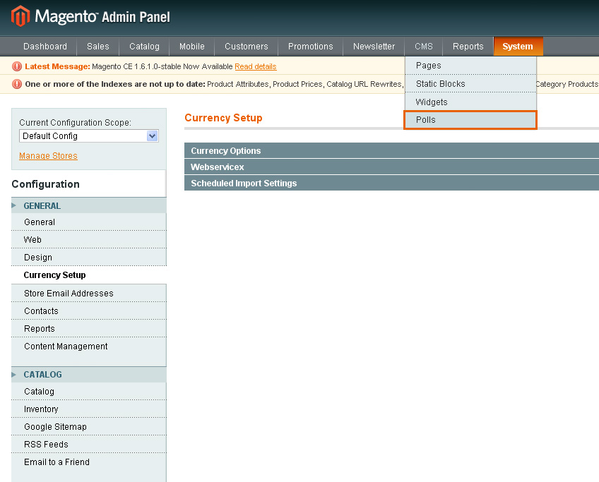
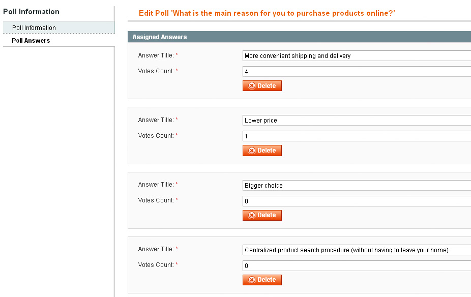

Magento installation from scratch:
Downloading Magento engine
Make sure to check the template software requirements at the preview page for the required version of Magento. We can't guarantee the correct work of the template if your version of Magento engine doesn't meet the requirements.
- Visit Magento official website at http://www.magentocommerce.com/
- From the top menu select Download > Community Edition.
- From the download options list select Full Release (.zip format) to download the most recent version of Magento engine

If you need earlier version of Magento engine:
- From the top menu select Download > Community Edition.
- select tab Release Archives.
- Locate and download the required version

When you are done with the Magento engine download you need to extract the files from the package downloaded and upload them to your hosting server. Feel free to check the tutorials on how to extract the files with WinZip (Windows OS) and StuffitExpander(MAC OS) and how to upload files to the hosting server
Alternatively, you can use the Downloader option. It allows you to download and upload Magento engine files faster. But note that the Downloader can be used for the installation of the latest version of Magento engine only. It can also be incompatible with some hosting servers and cause certain issues.
To use the Downloader option please do the following:
- From the top menu select Download > Community Edition.
- Select Downloader option and download the package
- Extract the package files
- In your browser address bar input your domain name and root to the directory with Magento files
- Magento Downloader will validate your hosting server for the compatibility with Magento e-commerce solution
- If your server is compatible in the Deployment section specify the necessary FTP server details (hostname, username, password)
- If the details are valid you can install Magento engine. But please don't hurry. Decide if you want to install template sample data or not.
Magento template sample data installation
Please note: the dump.sql.gz file should be imported into the clear database BEFORE you install Magento.
Magento template package contains the sample data file (dump.sql or dump.gz). This file is located in the /sources/sample_data directory of your template package. This file install the template sample data and makes your website look same as the template preview.
To install the dump file please perform the following:
- Open your database management tool (PhpMyAdmin). It can be accessed through your Hosting Control Panel.
- Create new database.
- Select the database you created for the Magento CMS.
- Select "IMPORT" option and click "Browse" button
- Navigate to the "/sources/sample_data" folder of the template and select dump.sql.gz file
- Press "GO" button.
- If you don't have much experience with PhpMyAdmin tool, please check this tutorial.
Do not use the dump.sql.gz file if you have a running store. The dump.sql.gz file import into your live database will remove your products. If you don't want to install the template sample content please install Magento over clear database. Skip the sample data installation step of this manual.
Magento template installation.
The next step of the setup procedure is the template installation. The template should be installed in any case: if you use sample data or not.
- First of all open the template package and go to the theme376 folder.
- Upload theme376 folder contents to the Magento installation directory (upload "app", "skin" and other folders). These folders contain the theme files. They will not affect your existing files.
- If you have imported the dump.sql.gz file and are going to use the template sample products you need to upload the product images. Upload the "media" folder from the template sources/sample_data directory to the Magento installation root directory.
- If you didn't install the dump.sql.gz file there is no need to upload the "media" folder.
The template is installed now and you can start the Magento installation procedure
Magento engine installation.
- Open your browser (Internet Explorer, Mozilla Firefox, Google Chrome, Opera etc) and please type your domain name with the root to the Magento installation directory into the address bar.
- Now please follow the instructions on the screen. You can check the detailed Magento installation video tutorial. This manual describes just the key tips of the installation procedure
- On Step 3 of the installation you should specify your database details. You can create the database and the access details using your hosting control panel. Feel free to check the detailed tutorial on how to create a database.
- Database Name - your database used for Magento installation
- User Name - username to access the database
- User Password — password to access the database

When you are done click the Continue button.
- Then you need to create website administrator account. Input your personal data and create administrator username and password

Keep these details safe.
- On the last step of installation please write down the Magento Encryption Key.
The Magento Encryption Key is generated in the process of Magento Installation. It is used for the encryption and the security storage of the sensitive data in the script's database.

The Magento Encryption Key is stored in the /app/etc/local.XML file.
The code which you should look for is:
<crypt> <key><![CDATA[ENCRYPTION_KEY]]></key> </crypt>The ENCRYPTION_KEY string is replaced by the actual encryption key. It is required in case you want to move your store data to a new Magento site. The Encryption key is used to recover the encrypted data. When you migrate your database content to a new Magento installation, make sure that the encryption key from the existing installation is specified in the new web site's local.xml file. Otherwise the encrypted data stored in the new database will not work.
- Congratulations. You have successfully finished the Magento installation procedure.
Installing Magento template over existing website
First of all please make sure your Magento installation meets the template requirements. If you use an outdated version of Magento you need to upgrade it. Don't forget to backup the files and the database. Magento upgrade instructions are available at Magento Wiki website.
If your Magento engine meets the template requirements you can start the template installation.
- Open the template package and go to the theme376 folder.
- Upload theme376 folder contents to the Magento installation directory (upload "app", "skin" and other folders). These folders contain the theme files. They will not affect your existing files.
Manual template configuration
This step is used to configure the template manually.
- Activate new theme
- Open Magento admin panel and in the top menu select System > Design
- Click "Add Design Change" button
- In the "Custom Design" field select the theme name (in this case theme376)
- Click "Save" button to confirm the changes
- Reindex data
- Open Magento admin panel and in the top menu select System > Index Management
- Check the "Select All" box in the top left corner
- Then on the right in the "Actions" field select "Reindex Data"
- Click the "Submit" button
- Please be patient, this may take for a while.
Logo configuration
Please follow this step if you have issues with the logo image.
- Open Magento admin panel and in the top menu select System > Configuration
- Select the "Design" tab
- In the "Header" section, edit the "Logo Image Src" field value. Change it from "gif" to "png"
- Click the "Save Config" button
Pages configuration
The template home page can contain such layout objects as - banners, slider, gallery, flash animation etc. To add the blocks to your store please use the instructions below.
We recommend you to disable the WYSIWYG editor. To do this from the admin top menu select System > Configuration. Open the "Content Management" section and in the WYSIWYG Options window set "Enable WYSIWYG Editor" option to "Disabled Completely".
- From the top menu select — CMS > Pages. Pages Home page, About Us and Customer Service should already be available so you don't need to add them. You only need to update the page's HTML and XML content.
- In case you need to add new page click the "Add New Page" button in the top right corner.
- Open the page and select the Content tab. Content tab contains the HTML code of the page. You can take the page HTML code from the appropriate source file. You can see list of source files in the table below. Copy the code from the source file and paste to the content area.
- When you are done with the HTML code switch to the "Design". It contains the page XML code. The XML code should be copied the same way as HTML from the source file. Copy the XML code to the "Layout Update XML" area.
- Don't forget to select the valid "Layout" option.
In case of any difficulties please check the detailed tutorial on how to configure pages manually
| # | Page Name | Page HTML (Content tab) | Page XML (Design tab) | Layout |
|---|---|---|---|---|
| 1. | Home Page | sources\demo\pages\home_page.phtml | sources\demo\pages\home_page.xml | 1 columns |
| 2. | About Us | sources\demo\pages\about_us.phtml | NA | 1 columns |
| 3. | Customer Service | sources\demo\pages\customer_service.phtml | NA | 2 columns left |
| 4. | Privacy Policy | sources\demo\pages\privacy_policy.phtml | NA | 1 columns |
The source files with the pages code are stored in the "sources\demo\pages\" directory of the template package.
Static blocks configuration
When you are done configuring pages you need to configure the static blocks. The procedure is similar - you need to copy the code from the source files.
- From the top menu select — CMS > Static Blocks.
- Click "Add New block" button in the right corner to add new block.
- Input the block name and identifier. You can get the block details from the table below.
- Open the block source file and copy the HTML code to the content area
In case of any difficulties please check the detailed tutorial on how to configure static blocks manually
Please note: some templates do not have any static blocks so the table below can be empty.

| # | Block Name | Block Title | Identifier | Content |
|---|---|---|---|---|
| 1. | Footer Links | Footer Links | footer_links | sources\demo\static_blocks\footer_links.phtml |
| 2. | footer_list_1 | footer_list_1 | footer_list_1 | sources\demo\static_blocks\footer_list_1.phtml |
| 3. | footer_list_2 | footer_list_2 | footer_list_2 | sources\demo\static_blocks\footer_list_2.phtml |
| 4. | Custom tab | Custom tab | custom_tab | sources\demo\static_blocks\custom_tab.phtml |
| 5. | Slider | Slider | slider_1 | sources\demo\static_blocks\slider_1.phtml |
| 6. | contact_block | contact_block | contact_block | sources\demo\static_blocks\contact_block.phtml |
| 7. | Heders links | Heders links | heders_links | sources\demo\static_blocks\heders_links.phtml |
The source files with the static blocks code are stored in the "sources\demo\static_blocks\" directory of the template package.
When you are done configuring store pages and blocks your store is ready to go.
General Customization
While editing the pages and static blocks we recommend you to disable the WYSIWYG editor. To do this from the admin top menu select System > Configuration. Open the "Content Management" section and in the WYSIWYG Options window set "Enable WYSIWYG Editor" option to "Disabled Completely".
How to edit pages
- From the top menu select — CMS > Pages. All store pages are available here. Open any of them to access the page content.

- From the left column select the Content tab. It contains the HTML code of the page. You are free to edit the code the way you need.
- Switch to "Design" tab to get access to the page XML content. XML code let's you embed Magento static blocks or widgets into the page.
How to edit static blocks
- From the top menu select — CMS > Static Blocks.
 For example please open the static block. You can see its HTML content. In this example we use the banners block. Using the HTML code you can easily change the banner image and link.
How to configure Currency module
- Open Magento admin panel
- From the top menu select System > Configuration
- Then click General and select the tab Currency Setup
- In the Currency Options holding the CTRL button select the allowed currencies that can be used to display prices in your Magento store. When you are done click the Save Config button to save your changes.
- Then go to System > Manage Currency Rates from the top menu
- Set the required currency rate values or use the Import Service. Click the Save Currency Rates button to save your changes.
How to edit Polls module
From the top menu select CMS > Polls

Open the necessary polls module. There you can change the poll items.

Conclusion
Magento engine is a great solution for your online store. The default engine package contains all modules necessary for successful sales. Open source allows you to offer really outstanding merchant possibilities for your customers. Due to the quite complex engine structure advanced usage of Magento will require much time and aspiration. You'll need much more than this manual.
The following resources will help you to become a true Magento professional: